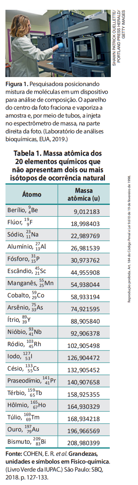

A energia requerida para o esforço muscular durante diferentes atividades físicas, como a capoeira, é obtida pela hidrólise de ATP, uma molécula produzida pelo organismo a partir de nutrientes energéticos provenientes da alimentação. Você faz ideia de quantas vezes, em média, uma mesma molécula de ATP é convertida em ADP e esta, novamente, em ATP? Neste capítulo, usando o conceito de quantidade de matéria, você conhecerá a resposta.
Objetos macroscópicos podem ser contados e, dessa forma, podemos falar, por exemplo, em cinco moedas, um par de meias ou duas dúzias de bananas. E contar átomos e moléculas, será possível? O que inviabiliza essa contagem de modo direto é que eles são extremamente pequenos, e isso dificulta visualizar e contar individualmente cada átomo de uma amostra macroscópica que, por menor que seja, contém um número imenso de moléculas e átomos. Contudo, o trabalho de diversos cientistas permitiu um meio indireto para realizar essa contagem.
Contar de modo indireto pode ser comparado a ter um grande lote de parafusos, todos de massa idêntica, e desejar saber quantos há ao todo. Utilizando uma balança, esse número pode ser determinado, concorda?
Vamos exemplificar o procedimento. Digamos que uma fábrica produza parafusos de 5 g cada um. A produção mensal é de 100 kg de parafusos. Contá-los individualmente até seria possível, mas há um modo bem mais rápido para saber quantos parafusos são produzidos: 100 kg equivalem a 100 × 103 g, ou 1 × 105 g, isto é, 100.000 g (cem mil gramas). Dividindo pela massa de cada parafuso, 5 g, determinamos a produção mensal: 2 × 104, ou 20.000 (vinte mil) parafusos.
Neste capítulo, você aprenderá como consultar a tabela periódica para chegar ao valor da massa de átomos, de moléculas e de íons e como usar medidas de massa para avaliar quantos átomos, moléculas ou íons há em certa amostra de matéria. Aprenderá também o significado da grandeza quantidade de matéria e a utilidade da constante de Avogadro.
1. Massa atômica
No final do século XIX e início do século XX, os cientistas desenvolveram um equipamento denominado espectrômetro de massa (Fig. 1), que permite comparar a massa de átomos (e de moléculas) com um padrão de massa previamente estabelecido. Por convenção, o padrão escolhido foi um doze avos (isto é, 1⁄12) da massa do isótopo carbono-12, ou seja, 126C, que é o isótopo do elemento químico carbono com número de massa 12. Isótopos são átomos com o mesmo número de prótons (mesmo número atômico) e diferente número de nêutrons. Esse padrão é chamado unidade de massa atômica unificada e simbolizado por u.
A massa de um átomo é denominada massa atômica. Ela é determinada experimentalmente utilizando espectrômetros de massa e, por conveniência, expressa em u.
Dos elementos químicos, apenas 20 não apresentam dois ou mais isótopos naturais, ocorrendo na natureza como um único tipo de átomo. Suas massas atômicas, experimentalmente determinadas, são apresentadas na Tabela 1.
Perceba que número de massa não é a mesma coisa que massa atômica. O número de massa é a soma dos números de prótons e de nêutrons de um átomo, sendo, portanto, inteiro e desprovido de unidade. Já a massa atômica é a massa de um átomo medida por meios experimentais. Para expressá-la, usamos um numeral seguido de uma unidade que, por conveniência, é a unidade de massa atômica unificada (u). Assim, por exemplo, no caso do átomo 2713Al (Tabela 1), o número de massa é 27 e a massa atômica é 26,981539 u.
O valor da massa atômica não costuma ser inteiro, exceto no caso do isótopo 126C, cuja massa tem valor exato igual a 12 em decorrência da definição adotada para a unidade de massa atômica unificada. A massa dos demais átomos não é inteira por alguns motivos, entre eles o fato de a massa do nêutron não ser rigorosamente igual à do próton, mas cerca de 0,14% maior que ela.
Quando o valor não inteiro da massa de um átomo, em u, é arredondado para o número inteiro mais próximo, o resultado coincide numericamente com o número de massa, que, por sua vez, indica o total de prótons e nêutrons no núcleo desse átomo. Você pode comprovar isso analisando os dados da Tabela 1.
Digamos que seja necessário determinar quantos átomos de alumínio há, por exemplo, em uma amostra de 36 g de alumínio puro. Para isso, basta dividir a massa da amostra, 36 g, pela massa de um único átomo, ambas expressas na mesma unidade. Então, surge a pergunta: qual é a massa de um átomo de alumínio (2713Al) expressa na unidade grama?
Para descobrir, necessitamos da relação entre grama (g) e unidade de massa atômica unificada (u). Por meios experimentais, os cientistas determinaram que:
1 g = 6,022140858 × 1023 u
Essa relação é frequentemente aproximada (como faremos neste livro) para:
1 g = 6,0 × 1023 u
Conhecendo essa relação, podemos converter a massa de um átomo de alumínio (27 u) para gramas, por meio de um raciocínio de proporcionalidade:
| Massa em g | Massa em u |
|---|---|
| 1 g | 6 × 1023 u |
| x | 27 u |
Assim:
x = (27 × 1) / (6 × 1023)
x = 4,5 × 10-23 g
Então, a massa de um único átomo de alumínio é 4,5 × 10-23 g, isto é, 0,000000000000000000000045 g! Para saber quantos átomos há em uma amostra de 36 g, dividimos essa massa por 4,5 × 10-23 g, o que nos conduz a 8,0 × 1023, ou seja, 800.000.000.000.000.000.000.000 átomos (800 sextilhões de átomos)!

A maioria dos elementos químicos apresenta-se na natureza como dois ou mais isótopos diferentes, cada um com sua massa atômica (Tabela 2).
O elemento boro, por exemplo, existe sob a forma de dois isótopos naturais, o boro-10 e o boro-11. O primeiro apresenta massa atômica de aproximadamente 10 u e abundância 20%; o segundo tem massa atômica próxima de 11 u e abundância 80%. Consideremos uma amostra de 100 átomos desse elemento, na qual há 20 átomos de boro-10 (isto é, 20% dos átomos na amostra) e 80 átomos de boro-11.
- Massa aproximada de 20 átomos de 10 u = 20 × 10 u = 200 u.
- Massa aproximada de 80 átomos de 11 u = 80 × 11 u = 880 u.
- Massa total aproximada dos 100 átomos = 200 u + 880 u = 1.080 u.
Se 100 átomos de boro têm massa aproximada de 1.080 u, então cada átomo desse elemento tem, em média, massa de 10,8 u. Esse cálculo é uma média ponderada e também poderia ter sido indicado da seguinte maneira:
Massa média aproximada de um átomo de boro = (20 × 10 u + 80 × 11 u) / 100 = 10,8 u
A massa e a abundância dos isótopos naturais dos elementos químicos foram determinadas experimentalmente. Com base nelas, foram calculadas as massas médias de seus átomos, expressas em unidades de massa atômica unificada, denominadas massas atômicas dos elementos químicos. São elas que constam em tabelas periódicas, como a que está no final deste livro. No caso dos elementos relacionados na Tabela 1, a massa atômica do elemento é a própria massa desses átomos, já que não há necessidade de calcular a média ponderada.
Ter à disposição valores de massas atômicas dos elementos químicos possibilita quantificar os átomos existentes em uma amostra. Se desejássemos, por exemplo, saber quantos átomos há em 36 g de boro, bastaria realizar um cálculo semelhante ao que fizemos para o caso do alumínio, porém empregando a massa atômica do boro (10,8 u). Os dados de massas atômicas também possibilitam calcular a massa de moléculas e de íons, como estudaremos em seguida.
Exercícios
1. Quantas vezes a massa de um átomo de argônio-40 (1840 Ar ) é maior que a massa de um átomo de hélio-4(24He)?
- a. 40
- b. 10
- c. 9
- d. 4
- e. 2
2.Dentro de um cofrinho, uma criança tem 20 moedas de 3,6 g cada e 10 moedas de 3,9 g cada. Qual é a massa total das moedas desse cofrinho? E a massa média dessas moedas? Estabeleça um paralelo entre a resolução da situação proposta e o cálculo da massa atômica de um elemento químico com dois isótopos naturais.
3. O elemento químico cobre apresenta dois isótopos naturais. Um deles tem massa 63 u e abundância 69%, e o outro tem massa 65 u e abundância 31%. Faça uma previsão se a massa atômica do elemento cobre deve ser maior ou menor que 64 u. Deixe claro o raciocínio envolvido.
4. Use os seguintes dados para mostrar que a massa atômica do elemento magnésio é 24,3 u.
- Magnésio-24, 24 12Mg, tem massa 24 u e abundância 79%.
- Magnésio-25, 25 12Mg, tem massa 25 u e abundância 10%.
- Magnésio-26, 26 12Mg, tem massa 26 u e abundância 11%.
5. Aproximadamente quantas vezes a massa de um átomo de enxofre é maior que a massa de um átomo de oxigênio?
6. Aproximadamente quantas vezes a massa de um átomo de silício é menor que a de um átomo de urânio?
7. Medidas experimentais revelaram que a massa de um único átomo de sódio é 23 u, o que equivale a 3,8 10–23 g. Faça uma estimativa de quantos átomos de sódio existem em uma amostra de 19 g desse metal.
- a. 1 bilhão de átomos.
- b. 300 milhões de átomos.
- c. 700 trilhões de átomos.
- d. 900 quatrilhões de átomos.
- e. 500 sextilhões de átomos.
2. Massa molecular, massa de um íon e massa fórmula
Os valores de massas atômicas permitem que realizemos o cálculo da massa de moléculas e de íons.
Denomina-se massa molecular a massa de uma molécula. Por conveniência, essa grandeza geralmente é expressa em unidades de massa atômica (u). Uma molécula de dióxido de carbono (CO2), por exemplo, é constituída de um átomo de carbono (massa atômica aproximadamente 12 u) e dois átomos de oxigênio (massa atômica aproximadamente 16 u) e, assim, a massa molecular do CO2 é aproximadamente:
12 u + 2 × (16 u) = 44 u
Para calcular a massa de um íon, por exemplo, Na+ ou Cl−, levamos em conta que a perda ou o recebimento de elétron(s) não altera significativamente a massa do átomo, já que um elétron tem massa centenas de vezes menor que um próton. Assim, por exemplo, como as massas atômicas do sódio e do cloro são, respectivamente, 23 u e 35,5 u, a massa do íon Na+ será 23 u e a do Cl− será 35,5 u.
Para compostos iônicos, que não são formados por moléculas, mas por íons, pode-se falar em massa fórmula, que é a massa do conjunto de íons que aparece na fórmula da substância. Por exemplo, a massa fórmula do cloreto de sódio (NaCl) é 58,5 u, valor obtido pela soma de 23,0 u (do Na+) e 35,5 u (do Cl−).
Exercícios
8.Quantas moléculas de água têm massa comparável à de uma molécula de glicose (C6H12O6)?
9.Qual das substâncias tem moléculas de maior massa: dióxido de carbono (CO2), amônia (NH3), etano (C2H6), silano (SiH4) ou fosgênio (COCl2)?
10. (Unifor-CE)Dos seguintes compostos, qual apresenta massa molecular igual a 30 u?
- C2H6
- PH3
- NH3
- NO2
- N2O3
11.Comente a seguinte afirmação, dizendo se concorda ou não com ela: “As moléculas têm massa maior que os átomos”.
12.Qual é a massa de um átomo de alumínio que está eletricamente neutro? E de um íon Al3+?
13.Qual é a massa de um átomo de ouro que está eletricamente neutro? E de um íon Au+? E de um íon Au3+?
14.Qual é a massa de um átomo de enxofre que está eletricamente neutro? E de um íon sulfeto (S2−)?
15.Qual dos seguintes íons tem menor massa: nitrato (NO3−), sulfato (SO42−), fosfato (PO43−), hipoiodito (IO−) ou amônio (NH4+)?
16.Esta é uma atividade para você estabelecer relações de proporcionalidade entre as massas de diferentes entidades. A massa de um átomo de magnésio (Mg) está para a massa de uma molécula de ácido acético (C2H4O2) na mesma proporção em que a massa de um abacate de 400 g está para a massa de uma:
- embalagem de feijão de 0,5 kg.
- embalagem de açúcar de 1 kg.
- embalagem de arroz de 5 kg.
- melancia de 8 kg.